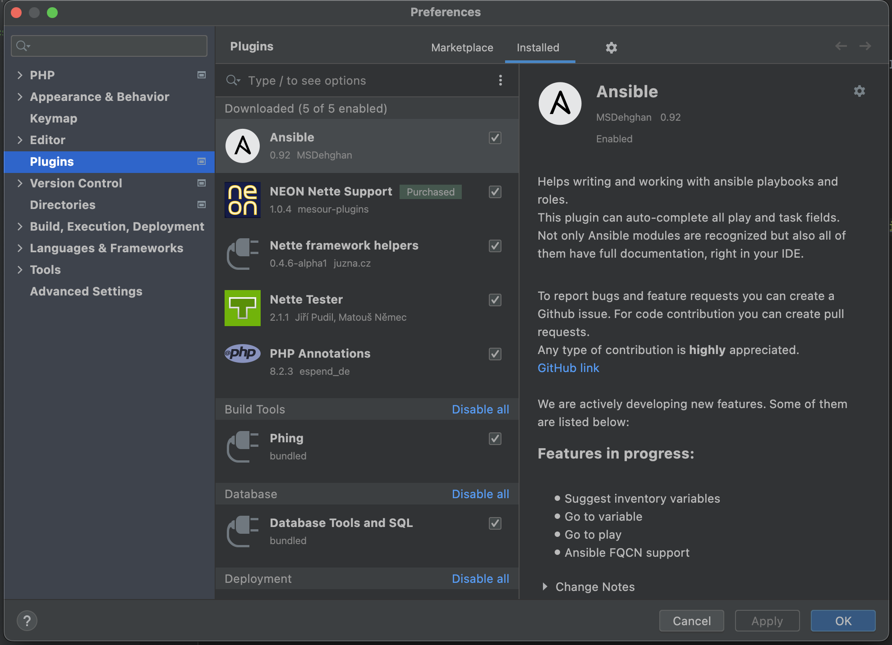
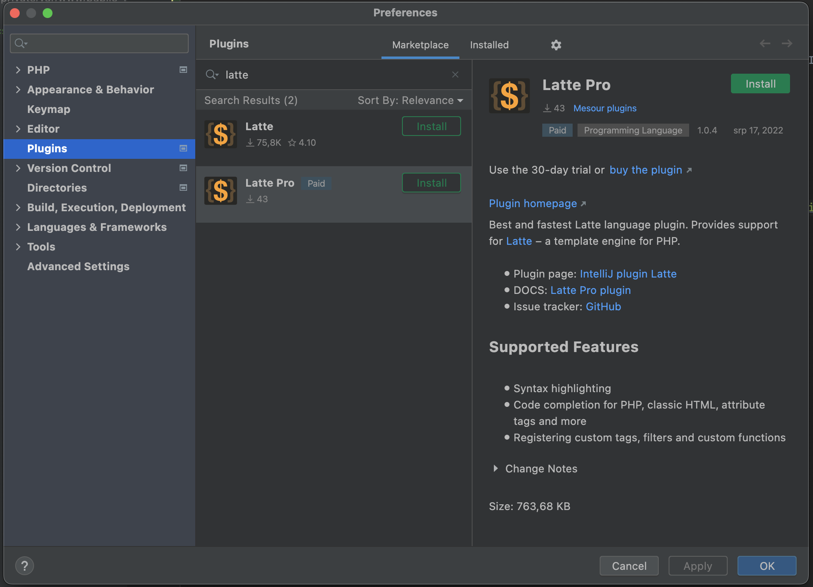

Provides support for Latte, the first truly secure and intuitive template engine for PHP.
As first read the recommendations. If you do not follow it then the plugin may not work properly on older versions of Latte.
latte-intellij.xml to intellij-latte-pro.xmlallowedFilters in <tags> was renamed to allowFiltersinsertColons in <filters> was removed and replaced by <filterArguments> element{label ...} tag cannot be used as unpaired without /} at the end. Use {label ... /} if you want it unpaired.{_...} can be used only as unpairedInstallation of IntelliJ Latte Pro is done through IntelliJ IDEA's integrated plugin manager. From within the application, open Preferences and select Plugins from the list on the left-hand side. This will show you the list of currently installed plugins. If you are currently using Latte free plugin then you must uninstall it before installing Latte Pro.
Next, click the Marketplace tab above the list. That allows you to browse through the plugins available on JetBrains' Marketplace. Enter "Latte" into the search field in the top left corner and select Latte Pro from the list. Finally, click the green Install button and restart the application. The plugin should now be installed, and you can set up your project.
If you do not follow it then the plugin may not work properly on older versions of Latte. Because in newer versions these constructs are marked as deprecated or completely removed.
{label name} without / at the end{label name}{label name /} or paired {label name} ... {/label}{_}...{/_}{_}translate.key{/_}{_translate.key} or paired {translate}translate.key{/translate}TODO: add some images of features
XML configuration files for Latte plugin are files that contain information about tags, filters, variables etc.
intellij-latte-pro.xml in your project including vendor folder or some other folders except ignored folders.intellij-latte-pro.xml files. All will be loaded, but must have different value in vendor attribute.intellij-latte-pro.xml files with your Composer packageThis is example file content with sample values:
myVendor/myPackage to your unique vendor name<?xml version="1.0" encoding="UTF-8"?>
<!DOCTYPE latte PUBLIC "-//LATTE//Latte plugin XML V0.0.1//EN" ".idea/intellij-latte-pro/xmlSources/Latte.dtd">
<latte vendor="myVendor/myPackage" version="1">
<tags>
<tag name="default" type="UNPAIRED">
<arguments>
<argument name="variable" types="VARIABLE_DEFINITION_EXPRESSION" required="true" repeatable="true" />
</arguments>
</tag>
<tag name="for" type="PAIR" arguments="initialization; condition; afterthought" multiLine="true" />
</tags>
<filters>
<filter name="npsPrint" description="Print NPS value" />
<filter name="percentPrint" description="Print percent value (can use null for print -)">
<filterArguments>
<filterArgument name="allData" type="float"/>
</filterArguments>
</filter>
</filters>
<functions>
<function name="clamp" returnType="int|float" documentation="clamps value">
<functionArguments>
<functionArgument name="value" type="int|float"/>
<functionArgument name="min" type="int|float"/>
<functionArgument name="max" type="int|float"/>
</functionArguments>
</function>
<function name="odd" returnType="bool" documentation="checks if the given number is odd">
<functionArguments>
<functionArgument name="value" type="int"/>
</functionArguments>
</function>
</functions>
<variables>
<variable name="control" type="\Nette\Application\UI\Control" />
<variable name="basePath" type="string" />
<variable name="baseUrl" type="string" />
<variable name="flashes" type="mixed[]" />
</variables>
</latte>If a required parameter is missing or invalid item will be skipped.
| attribute | required | default | possible values | Description |
|---|---|---|---|---|
name |
yes | none | any string | Name of tag |
type |
yes | none | PAIR, UNPAIRED, UNPAIRED_ATTR or ATTR_ONLY |
Type of tag |
arguments |
no | "" | any string | Used after code completion as help |
allowFilters |
no | false | true, false | Used for inspections and completions |
multiLine |
no | false | true, false | Used after code completion |
deprecatedMessage |
no | "" | any string | Message for deprecated tag |
description |
no | "" | any string | Description will be shown in completion dialog |
documentation |
no | "" | any string | Documentation will be shown when you hover over tag element |
documentationUrl |
no | "" | URL | Documentation URL will be shown when you hover over tag element |
type details:PAIR - means pair tag like {form}{/form}UNPAIRED - means unpaired tag like {varType}UNPAIRED_ATTR - means tag used only as unpaired tag like {varType} or n:attribute, like n:elseATTR_ONLY - means tag used only as n:attribute, like n:classarguments details:arguments can contain string which will be shown as help after code completionarguments is not provided, it means "tag without arguments"arguments you can define arguments as child <argument> elements of <arguments> element which is child of <tag><argument> tags, help for code completion will be generated automaticallyarguments. When using <argument> tags, then this value will rewrite automatically generated help after code completion| attribute | required | default | possible values | Description |
|---|---|---|---|---|
name |
yes | none | any string | Name of tag argument |
types |
yes | none | Types are listed under this table | Argument types separated by comma |
type |
no | mixed | PHP type definition | Expected return type of argument |
required |
no | false | true, false | Used for inspections and completions |
repeatable |
no | false | true, false | Used for inspections and completions |
types detail:PHP_IDENTIFIER - matches with foo, bar, foo_123, ...PHP_EXPRESSION - matches with $var, foo(), \Bar::, ... (-> | :: property|method|constant)PHP_CONDITION - matches with PHP_EXPRESSION (only use condition as name for completion)PHP_CLASS_NAME - matches with class names \Foo, \Foo\Bar, ...VARIABLE - matches with $varVARIABLE_DEFINITION - matches with $var and mark it as definitionVARIABLE_DEFINITION_EXPRESSION - matches with [type] $variable = expr, and mark variable as definitionVARIABLE_DEFINITION_ITEM - matches with [type] $var and mark variable as definitionBLOCK - matches with #blockBLOCK_USAGE - matches with PHP_IDENTIFIER (only use block as name for completion)NONE - matches with string nonePHP_TYPE - matches with php type like string, string|null, \Foo\Bar, ...CONTENT_TYPE - matches with content type like application/json, ...LINK_DESTINATION - matches with default, Foo:detail, handleFoo!, ...LINK_PARAMETERS - matches with PHP_EXPRESSION or KEY_VALUEKEY_VALUE - matches with , [var =>] valueCONTROL - matches with VARIABLE (only use $control as name for completion)| attribute | required | default | possible values | Description |
|---|---|---|---|---|
name |
yes | none | any string | Name of filter |
description |
no | "" | any string | Used as description for code completion |
documentation |
no | "" | any string | Documentation will be shown when you hover over filter element |
documentationUrl |
no | "" | URL | Documentation URL will be shown when you hover over filter element |
| attribute | required | default | possible values | Description |
|---|---|---|---|---|
name |
yes | none | any string | Name of filter argument |
type |
yes | none | PHP type definition | Type of filter argument |
defaultValue |
no | "" | any string | Default value of argument. No default value means required argument. |
description |
no | "" | any string | Used as description for code completion |
| attribute | required | default | possible values | Description |
|---|---|---|---|---|
name |
yes | none | any string | Name of PHP variable (without $) |
type |
yes | mixed | PHP type definition | PHP type definition (eg. string) |
| attribute | required | default | possible values | Description |
|---|---|---|---|---|
name |
yes | none | any string | Name of custom function |
returnType |
yes | mixed | PHP type definition | Return type (eg. string) |
documentation |
no | "" | any string | Documentation will be shown when you hover over function element |
documentationUrl |
no | "" | URL | Documentation URL will be shown when you hover over function element |
| attribute | required | default | possible values | Description |
|---|---|---|---|---|
name |
yes | none | any string | Name of function argument |
type |
yes | none | PHP type definition | Type of function argument |
defaultValue |
no | "" | any string | Default value of argument. No default value means required argument. |
description |
no | "" | any string | Used as description for code completion |
Since 1.0.0, IntelliJ Latte Pro plugin is compatible with IntelliJ IDEA Ultimate
and PhpStorm with version 2021.3 and higher.
Bug reports can be posted in GitHub public repository.
© 2022 Matouš Němec
 NEON
NEON Latte
Latte